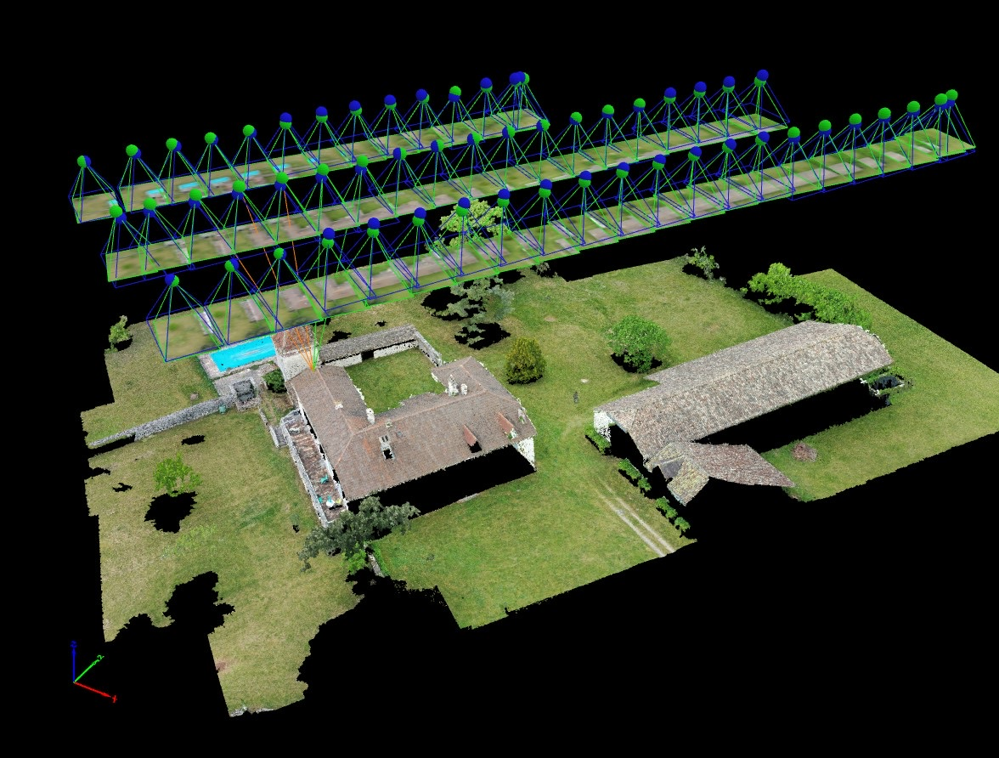
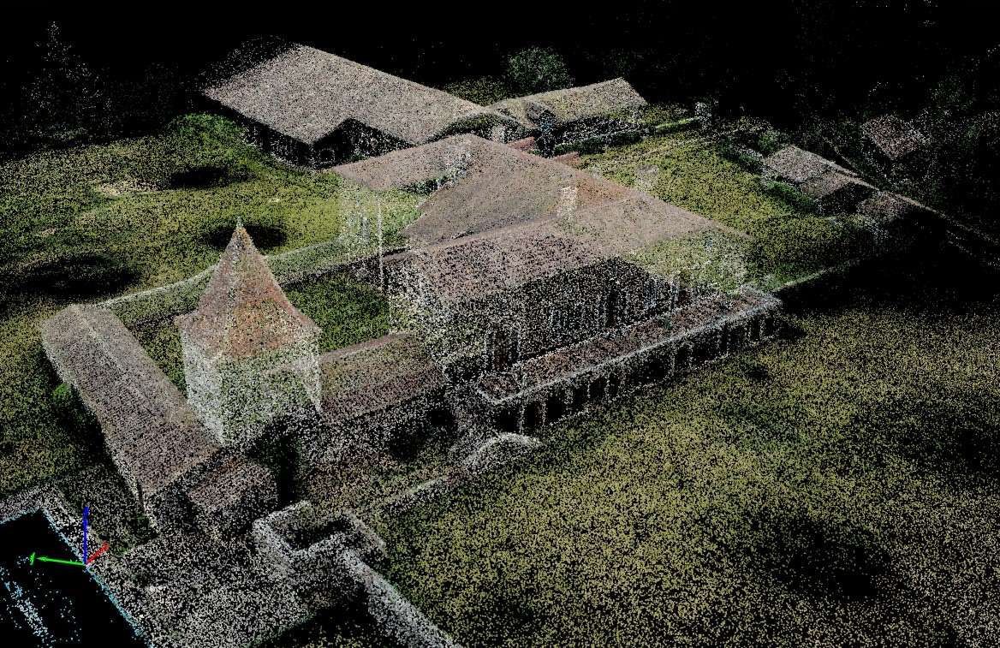
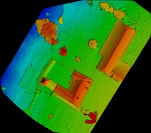
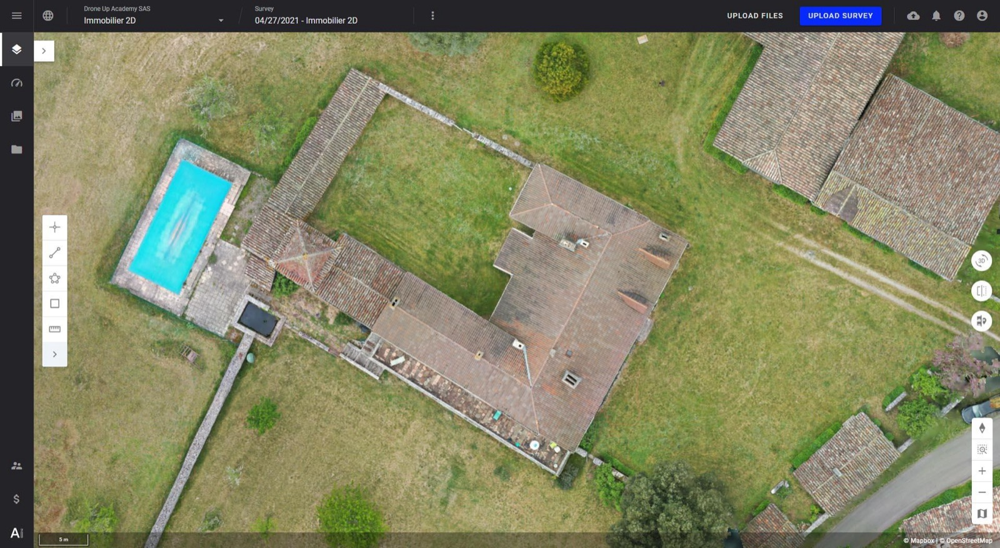
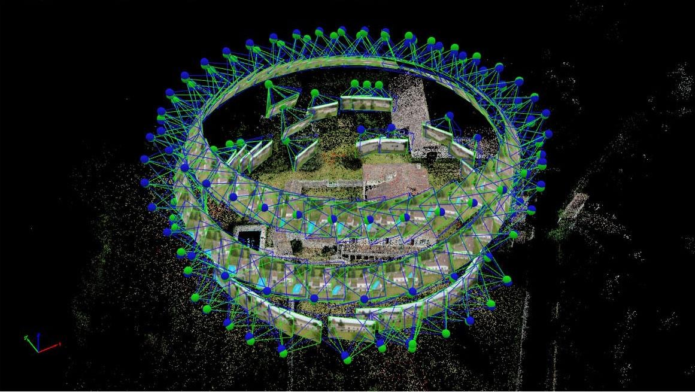

Jour 2 — Terrain, orthophoto & traitement Metashape
GCP · Vol ortho · Vol 3D n°1 · Metashape Professional
Le programme du jour
Matin — sur le terrain
Présentation du site et briefing sécurité
Atelier GCP : poser les cibles, mesurer au D-RTK 3
Vol orthophoto programmé, en RTK
Vol 3D n°1 : en autonomie complète
Contrôle des images avant de quitter le site
Après-midi — Metashape
Organiser son projet et ses données
Aligner les photos, placer les repères (GCP)
Contrôler la précision avec les points de contrôle
Nuage dense, MNE, orthomosaïque, exports et rapport
Lancer le traitement du vol 3D n°1
Module 8
Sur le terrain : points d'appui et vols
Présentation du site, rôles et sécurité, implantation et mesure des GCP, vol orthophoto, vol 3D n°1 et contrôle qualité avant de partir.
Notre site de vol
Le formateur présente le site réel de la session en reprenant la trame de préparation du jour 1.
Le terrain
Localisation, surface, relief
Zone de l'orthophoto
Point de décollage, base RTK
L'objet 3D
Bâtiment, tas, ouvrage…
Dimensions, hauteur
Obstacles autour
Les contraintes
Catégorie, zones, autorisations
Tiers, accès, voies
Météo et Kp du jour
Le référentiel
Système de coordonnées et référence d'altitude retenus : RGF93 v2b / CCxx + NGF-IGN69 (ou Lambert 93 selon le site). Coordonnées du point connu ou réseau NRTK utilisé.
Les points d'appui
Emplacements prévus des 5 GCP et 3 à 4 points de contrôle, numérotation des cibles.
Briefing : rôles et sécurité
TélépiloteResponsable du vol, de la check-list et de la décision de décoller
ObservateurSurveille l'espace aérien et les tiers, garde le contact avec le télépilote
Opérateur GNSSPose et mesure les cibles, remplit la fiche de relevé
Contrôle qualitéVérifie les photos sur l'ordinateur à chaque atterrissage
Règles du terrain
Zone de décollage balisée, personne dessous pendant le vol
Garder le drone en vue, surveiller tiers et aéronefs
Suivre la progression, la batterie et le statut RTK
Perte du FIX : noter l'heure et les lignes concernées
Coupure de mission : reprise au point d'arrêt avec la même mission (le recouvrement est conservé)
L'enregistrement de la mission permet de revoler exactement la même trajectoire lors d'un prochain passage : indispensable pour comparer deux dates.
Atelier 3 · Vol 3D n°1 · en autonomie
Modélisez l'objet en 3D. Vous décidez de tout : type de mission ou vol manuel, hauteur, angle de nacelle, nombre de passages, recouvrements, vitesse, réglages caméra. Le formateur n'intervient que pour la sécurité.
1 batteriepar binôme
45 minpréparation + vol
Fiche de volnotez tous vos choix
Avant de quitter le site : le contrôle qualité
Nombre de photos conforme au plan de vol
Netteté vérifiée à 100 % sur un échantillon
Exposition homogène, pas de zones brûlées
Géotags RTK : statut fixé sur toutes les photos
Couverture : positions des photos sur la carte, aucun trou
Fichier des points exporté, sauvegardé en double
Le test ultime : un alignement rapide dans Metashape en précision « Basse » sur l'ordinateur de terrain. S'il réussit, on peut partir.
Module 9
Metashape : de l'image à l'orthomosaïque
La chaîne complète dans Agisoft Metashape Professional : organisation, alignement, repères, contrôle de précision, nuage dense, MNE, orthomosaïque, exports et rapport.
Agisoft Metashape : Standard ou Professional ?
Fonction
Standard
Professional
Alignement, nuage, maillage, texture
✓
✓
Géoréférencement, repères (GCP)
—
✓
MNE et orthomosaïque géoréférencés
—
✓
Mesures de distances, surfaces, volumes
—
✓
Classification du nuage (sol, bâti…)
—
✓
Rapport de traitement, traitement par lot, scripts Python
—
✓
Version utilisée en formation : Metashape Professional 2.3 (interface en français). Une licence d'essai de 30 jours est disponible chez l'éditeur.
Pourquoi Metashape ?
Référence du marché en photogrammétrie aérienne et terrestre
Licence perpétuelle, fonctionne hors ligne sur votre ordinateur
Mac, Windows, Linux
Ordinateur conseillé
Carte graphique performante (calcul GPU)
32 à 64 Go de mémoire vive
Disque SSD rapide, beaucoup d'espace : un projet de 600 photos peut dépasser 50 Go
L'interface de Metashape
Menu Traitements : toutes les étapes, dans l'ordre, de haut en bas
Espace de travail : le projet, ses morceaux (chunks) et leurs produits
Référence : coordonnées et erreurs des caméras et des repères
Modèle : la vue 3D (caméras, nuages, maillage) ; onglets Ortho et photo
Photos : les images, leur qualité, le pointage des repères
Schéma simplifié de l'interface de Metashape Professional 2.3 (intitulés de l'interface française)
Avant de cliquer : organiser son projet
2026-10-19_Site_Ortho
📁 01_RAW photos brutes, par vol
📁 vol_ortho
📁 vol_3D_1
📁 02_REF points GCP / CP (.csv),
fiche de relevé, croquis
📁 03_METASHAPE projet .psx
📁 04_LIVRABLES ortho, MNE, nuage, volumes
📁 05_RAPPORT rapport PDF, notes
Structure utilisée sur les projets Dronexperts
Un dossier par chantier, daté, toujours la même structure
Ne jamais renommer ni déplacer les photos après les avoir importées (le projet perd leur trace)
Enregistrer au format .psx (projet + dossier .files)
Dans Outils › Préférences : vérifier que le GPU est activé
Garder les photos brutes intactes : sauvegarde sur un second support
Un dossier propre, c'est un projet que vous ou un collègue pourrez rouvrir dans un an pour le prochain inventaire.
La chaîne de traitement d'une orthophoto
1. Ajouter et vérifier les photos
Traitements › Ajouter des photos…
Sélectionner toutes les photos du vol (pas les vidéos ni les fichiers .MRK)
Les positions apparaissent dans le panneau Référence et dans la vue Modèle
Supprimer les photos de décollage et d'atterrissage, et celles hors zone
Photos › clic droit › Estimer la qualité d'image…
Ajoute une colonne Qualité (vue Détails du panneau Photos)
Photos sous 0,5 : à désactiver (floues)
Désactiver plutôt que supprimer
Une photo désactivée n'est pas utilisée dans le calcul mais reste dans le projet : on peut la réactiver si besoin.
Vérifier les géotags
Dans Référence : précision affichée par photo, positions cohérentes. Des photos à 0 m d'altitude ou décalées de plusieurs centaines de mètres signalent un problème de géotag.
2. Les paramètres de référence
Référence › Paramètres de référence…
Réglage
Valeur (exemple)
Système de coordonnées (projet)
RGF93 v2b / CC50 + NGF-IGN69
Référence de la caméra
système des géotags (géographique, hauteurs ellipsoïdales)
Référence du repère
système du fichier de points
Précision de la caméra (m)
0,03 en RTK · 5 à 10 sans RTK
Précision du repère (m)
0,02
Précision du repère (px)
0,5
Précision des points de liaison (px)
1
La précision, c'est un poids
Elle dit au logiciel à qui faire confiance : aux géotags des photos, ou aux repères au sol. Des valeurs fausses faussent le calage.
Le système des géotags RTK est celui de la correction (base sur point RGF93, réseau NRTK) : à indiquer correctement, sinon décalage d'environ 1 m.
Le passage des hauteurs ellipsoïdales aux altitudes NGF se fait automatiquement avec la grille RAF20 intégrée.
3. Aligner les photos
Traitements › Aligner les photos…
Paramètre
Choix
Précision
Haute (images à pleine résolution)
Présélection générique
✓
Présélection par références
✓ Source (utilise les géotags)
Limites de points-clés et de liaison
valeurs par défaut
Exclure les points de liaison fixes
✓
Ajustement progressif du modèle de la caméra
✓
« La plus haute » sur-échantillonne les images : plus long, rarement utile en aérien.

Résultat : positions et orientations des caméras (rectangles bleus) et nuage de points de liaison
4. Importer et pointer les repères (GCP)
Référence › Importer la référence : le CSV des points (choisir le bon système, colonnes nom / X / Y / Z)
Les repères apparaissent ; sur chacun : clic droit › Filtrer les photos par repère
Ouvrir chaque photo, glisser le drapeau exactement au centre de la cible (le drapeau devient vert)
Pointer sur 6 à 10 photos par repère, bien réparties (centre et bords d'image)
Répéter pour chaque GCP et chaque point de contrôle
5. Optimiser et lire les erreurs
Référence — Repères
Repère
Erreur XY (m)
Erreur Z (m)
Projections
Erreur (px)
☑
GCP01
0,008
0,011
9
0,41
☑
GCP02
0,006
0,009
8
0,38
☑
GCP03
0,010
0,014
10
0,52
☐
CP01
0,017
0,026
8
0,47
☐
CP02
0,021
0,031
7
0,55
Total CP
0,019
0,029
Valeurs d'exemple
Décocher les points de contrôle (CP) : ils sont exclus du calcul
Optimiser les caméras (bouton du panneau Référence) : paramètres par défaut
Erreur en pixels < 1 : pointage cohérent
Erreur des CP = la précision réelle à annoncer
Un repère avec une erreur très supérieure aux autres : mauvais pointage, faute de nom, de hauteur de canne… ou cible déplacée. Enquêter avant de le supprimer.
6. Nettoyer les points de liaison
Modèle › Sélection graduelle… › critère › Supprimer › puis Optimiser à nouveau
Erreur de reprojection
Écart entre un point et sa position sur les photos. Supprimer les points au-delà de ~0,5 à 1 px.
Incertitude de reconstruction
Points mal « triangulés » (vus sous des angles trop proches). Seuil courant : 10 à 15.
Précision de la projection
Points détectés de façon imprécise sur les images. Seuil courant : 3 à 5.
Ne jamais supprimer plus de 10 à 20 % des points à chaque passage, et garder assez de points sur chaque photo. Trop nettoyer décroche des caméras.
Chaque passage est suivi d'une optimisation. On surveille l'évolution des erreurs sur les points de contrôle : elles doivent baisser ou rester stables.
7. Construire le nuage de points dense
Traitements › Construire un nuage de points…
Paramètre
Choix
Données source
Cartes de profondeur
Qualité
Haute (Moyenne pour aller vite)
Filtrage de la profondeur
voir ci-dessous
Calculer les couleurs des points
✓
Calculer la confiance des points
✓ (utile pour filtrer)
Filtrage
Quand l'utiliser
Agressif
Terrains, ortho, cubatures : le moins de bruit
Modéré
Compromis courant
Léger
Petits détails 3D (garde-corps, arêtes fines)

Nuage dense : des dizaines de millions de points colorés
8. Construire le MNE (et le MNT)
Traitements › Construire un MNE…
Projection
le système du projet (CC50…)
Données source
Nuage de points
Interpolation
Activée (par défaut)
Classes des points
Tout → MNS · Sol → MNT
Résolution
automatique (≈ 2 × GSD)
Pour un MNT
D'abord Outils › Nuage de points › Classifier les points de terrain…, contrôler visuellement la classe « Sol », puis construire le MNE sur cette seule classe.

MNS coloré par altitude
Le MNE sert aussi de surface de projection pour l'orthomosaïque à l'étape suivante.
9. Construire l'orthomosaïque
Traitements › Construire une orthomosaïque…
Projection
système du projet
Surface
MNE (le MNS pour une « vraie ortho »)
Mode de fusion
Mosaïque (par défaut)
Activer le remplissage des trous
✓
Taille de pixel
automatique (= GSD)
Contrôler dans l'onglet Ortho : raccords, bâtiments, bords
Corriger si besoin les lignes de raccord (choisir une autre photo pour une zone)

Orthomosaïque géoréférencée superposée au fond de carte
10-11. Exporter et générer le rapport
Fichier › Exporter
Exporter l'orthomosaïque… : GeoTIFF (+ fichier de calage), compression JPEG ou LZW, format BigTIFF si très grande
Exporter le MNE… : GeoTIFF 32 bits (altitudes réelles)
Exporter le nuage de points… : LAS / LAZ pour CloudCompare
Toujours vérifier le système de coordonnées proposé à l'export
Fichier › Exporter › Générer un rapport…
Nombre d'images, GSD obtenu, surface couverte
Carte de recouvrement : nombre d'images par zone (viser ≥ 9)
Erreurs des positions caméras
Erreurs des points d'appui et des points de contrôle
Résolution du MNE, aperçus
Le rapport PDF est la preuve de qualité remise au client : il accompagne toujours les livrables.
À vous : traitez le vol orthophoto
TP en binômes · 2 h
Créer le dossier projet et y copier photos et fichier de points
Étapes 1 à 3 : photos, paramètres de référence, alignement
Étapes 4 à 6 : repères, points de contrôle, optimisation, nettoyage
Point d'étape avec le formateur : erreurs des CP
Étapes 7 à 11 : nuage dense, MNE, ortho, exports, rapport
Livrables attendus
Orthomosaïque GeoTIFF
MNS GeoTIFF
Nuage de points LAS
Rapport PDF
Critère de réussite
Erreur sur les points de contrôle ≤ 2 GSD en XY et ≤ 3 GSD en Z, et ortho superposable au fond IGN.
L'expérience : RTK seul ou RTK + GCP ?
Clic droit sur le morceau › Dupliquer… (après l'alignement)
Morceau A : tous les repères décochés (ils ne servent que de contrôle) → RTK seul
Morceau B : GCP cochés, CP décochés → RTK + GCP
Optimiser les deux, comparer les erreurs sur les mêmes points de contrôle
On mesure ainsi, sur nos propres données, ce qu'apportent réellement les GCP.
Erreur sur les CP
A : RTK seul
B : RTK + GCP
XY (m)
… à mesurer
… à mesurer
Z (m)
… à mesurer
… à mesurer
Total (m)
… à mesurer
… à mesurer
Ce que l'on observe souvent : RTK seul déjà bon en planimétrie, mais un biais vertical de quelques centimètres que les GCP corrigent.
Question
À quel moment pointe-t-on les repères (GCP) dans Metashape ?
AAvant d'ajouter les photos
BAprès l'alignement, avant le nuage dense
CAprès l'orthomosaïque
DUniquement à l'export
Afficher la réponse
Réponse B. Après l'alignement, Metashape sait projeter les repères sur les photos, ce qui facilite le pointage. On optimise ensuite les caméras : le calage est fait avant les étapes longues (nuage dense, MNE, ortho), qui en héritent.
Question
Vos GCP affichent 0,8 cm d'erreur, vos points de contrôle 6 cm. Quelle précision annoncez-vous au client ?
A0,8 cm : c'est l'erreur des points d'appui
BLa moyenne des deux, environ 3 cm
C6 cm : l'erreur mesurée sur les points de contrôle
DLa précision RTK du constructeur
Afficher la réponse
Réponse C. Les points d'appui participent au calcul : leur erreur est forcément flatteuse. Seuls les points de contrôle, indépendants, mesurent la précision réelle. Un tel écart entre les deux doit aussi faire chercher une cause (pointage, recouvrement, déformation).
Question
Pour une cubature de stocks, quel filtrage de profondeur choisir pour le nuage dense ?
AAgressif
BLéger
CDésactivé
DPeu importe
Afficher la réponse
Réponse A. Sur des surfaces continues (sol, tas), le filtrage agressif supprime le bruit sans perte utile, ce qui donne un MNS propre pour le calcul de volume. Le filtrage léger se réserve aux objets avec de fins détails à conserver.
Module 10
Traiter le vol 3D n°1
Lancer le traitement de votre propre vol 3D, observer le résultat et noter ce qui ne va pas. On corrige demain.
Lancer le traitement 3D
Traitements › Traitement par lot…
Aligner les photos — Précision Haute
Construire un nuage de points — Qualité Moyenne, filtrage Léger
Construire le Modèle (maillage) — source : cartes de profondeur
Construire la texture
Le traitement par lot enchaîne les étapes sans intervention : on le lance en fin de journée, il tourne pendant la nuit.

Un vol 3D : les caméras entourent l'objet
Observez… sans corriger
Pour chaque modèle, notez sur votre fiche ce que vous voyez. Les causes et les corrections seront l'objet du débrief de demain matin.
Photos non alignées : combien, où ?
Trous dans le modèle : toits, façades, dessous ?
Surfaces déformées, « fondues », bosses
Texture floue, couleurs inégales, ombres
Arêtes arrondies, détails perdus
Bruit : points flottants, ciel, reflets
Il n'y a pas de mauvaise note : un modèle raté est le meilleur support pédagogique de demain.
Ce qu'il faut retenir du jour 2
Terrain
Cibles stables, visibles, nommées
Mesure au FIX, hauteur de canne vérifiée
Contrôle des images avant de partir
Metashape
Bon système et bonnes précisions dès le départ
Repères pointés sur 6 à 10 photos
Optimiser, nettoyer, puis densifier
Qualité
La précision se lit sur les points de contrôle
Le rapport PDF accompagne toujours les livrables
Demain : débrief des modèles 3D n°1, vol 3D n°2 corrigé, maillage et texture, puis CloudCompare : mesures, cubatures et comparaison des deux modèles.
Fin du Jour 2
À demain : on corrige le vol 3D et on exploite les données dans CloudCompare.